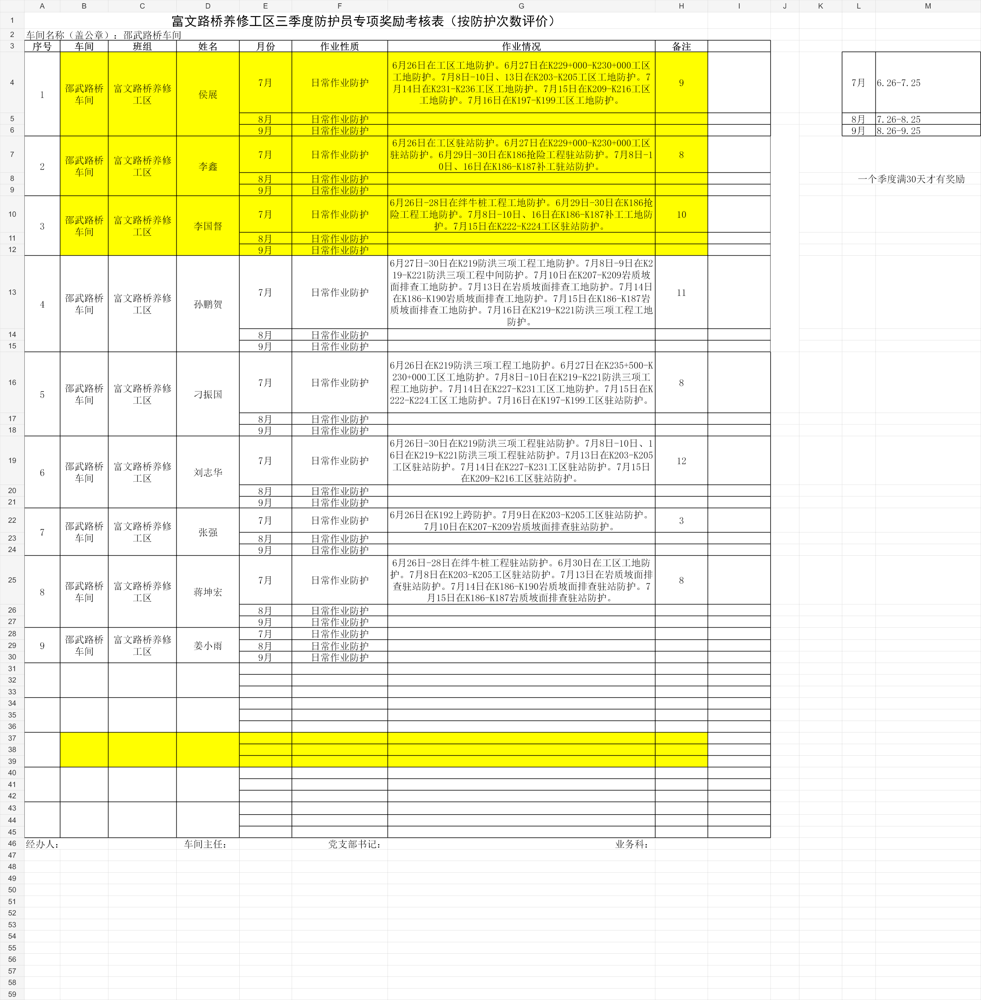

01
一键工作程序
集中处理施工计划、每日工时表、超时情况说明和周末加班明细等日常资料。
下载日升最新版张帅 · 富文路桥工区
——唐太宗《帝范》卷四
ABOUT ME
我是张帅，来自富文路桥工区。工作里有许多需要反复整理、核对和交接的资料；我把这些真实需求记下来，再把它们做成简单、可靠、能落地的工具。
这不是一个追求复杂功能的页面，而是对工作方法和实用成果的一次整理：让重复的事情少花一点时间，让重要的核对多一份从容。
SELECTED WORK
从一线工作中来，也为一线工作服务。

面向工区日常表格任务的离线工具。解压后即可使用，不需要安装 Python，也不需要连接网络。
OFFLINE TOOLS
两款工具均可离线运行，下载并完整解压后即可使用。
01
集中处理施工计划、每日工时表、超时情况说明和周末加班明细等日常资料。
下载日升最新版02
用于岗位星级评定资料的自动填写，减少重复录入，便于完成后继续核对。
下载离线版填写 Excel 前，请先关闭正在编辑的目标表格。程序会持续根据一线使用反馈更新。